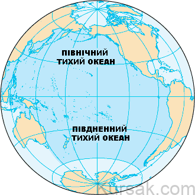
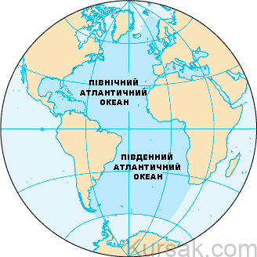
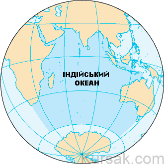
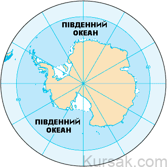
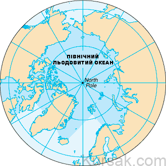

Світовий океан
Друга назва Землі, «блакитна планета», з’явилася не випадково. Коли перші космонавти побачили планету з космосу, вона постала перед ними саме в такому кольорі. Чому планета здалася блакитною, а не зеленою? Тому що 70% поверхні Землі – блакитні води Світового океану.
Понад 96% всієї води на Землі – солона вода.
Про океани є багато невідомого. Ось чому океанографія – наука, що розвивається.
Світовий океан – це водна оболонка Землі, що оточує материки й острови. Найбільші його частини називають океанами.
З часом кількість океанів еволюціонувала від одного водного тіла до багатьох.
Океанів всього 5:
- Тихий океан
- Атлантичний океан
- Індійський океан
- Північний Льодовитий океан
- Південний океан
Середня глибина товщі води в Світовому океані – 3700 метрів. Найглибша точка знаходиться в Маріанському жолобі – 11 022 м.
Опишемо 5 океанів Землі від найбільшого до найменшого.
Тихий океан
Тихий океан – найбільший океан на Землі.
Він отримав свою назву “Тихий” через те, що в той час, коли мореплавці під керівництвом Ф. Магеллана його перетинали, був на диво тихим. З латині означає “мирний”.
Друга назва Тихого океану – Великий. Він дійсно великий – це 1/2 частина вод Світового океану (165 200 000 км²). Тихий океан займає 2/3 земної поверхні.
Він торкається західного узбережжя Америки, Східної Азії та Австралії.
Екватор ділить Тихий океан на дві окремі частини – Північний Тихий океан та Південний Тихий океан.
Води Тихого океану дивовижно чисті і прозорі, найчастіше – темно-синього кольору, але бувають і зеленими. Середня глибина вод – 3800м. Ступінь солоності води – середня. Більшість часу океан тихий і спокійний, над ним дме помірний вітер. Ураганів тут майже не буває. Над Тихим океаном завжди чисте зоряне небо.
Атлантичний океан
Атлантичний океан – другий за величиною після Тихого (106 400 000 км²) і найсолоніший океан у світі.
На карті він нагадує букву S, розташований між Америками, Європою та Африкою. Він включає Середземне, Карибське та Балтійське моря і Мексиканську затоку.
Слово “Атлантика” походить від назви грецького бога “Атлас”, який несе небо у вічність.
Походження його назви до цих пір викликає питання у вчених усього світу. За однією з версій, Атлантичним океан назвали на честь титана Атланта, представника грецької міфології. Прихильники другої гіпотези стверджують, що своєю назвою він зобов’язаний Атлаським горам, розташованим в Африці. Представники «наймолодшої» третьої версії вважають, що Атлантичний океан названий так на честь загадкового зниклого материка Атлантида.
Океанське дно складається з середньоатлантичного хребта. Це частина найдовшого гірського хребта у світі.
Вікінги, португальці та Христофор Колумб широко досліджували Атлантичний океан.
Ступінь солоності океанічних вод – найвища. Флора і фауна – багатюща, вчені до цих пір знаходять невідомі науці цікаві екземпляри. У холодній його частини мешкають такі цікаві представники фауни, як кити і ластоногі. У теплих водах можна виявити кашалотів і котиків.
Унікальність Атлантичного океану в тому, що саме він, точніше, його тепла течія Гольфстрім, яку жартома називають головною європейською «топкою», «відповідає» за клімат всієї Землі.
Індійський океан
Індійський океан – третій за величиною океан (73 556 000 км²), геологічно наймолодший з 5 океанів. Він містить 20% води на Землі.
Межує з Індією на півночі, Східною Африкою, Австралією та Південним океаном. Індійський океан оточує густонаселений регіон.
Починаючи з 800 року н.е., Індійський океан відігравав важливу роль у торгівлі. Протягом століть мореплавці плавали по головних океанських течіях для відвантажувальних маршрутів. Індійський океан все ще постачає світ такими спеціями, як чорний перець, мускатний горіх та імбир.
В Індійському океані можна знайти багато рідкісних екземплярів флори і фауни. У ньому, як вважають дослідники, мореплавання почалося близько 6 тисяч років тому. Першими мореплавцями були араби, вони ж склали перші карти. Його свого часу досліджували Васко да Гама, Джеймс Кук.
Підводний світ Індійського океану приваблює дайверів з усього світу.
Води Індійського океану чисті, прозорі і дивно красиві завдяки тому, що в нього впадає мало річок. Також вони можуть бути темно-блакитними і блакитними.
Південний океан
Південний океан – це найновіший і найменш досліджений океан.
До середини 20 століття води навколо Антарктиди, як правило, вважалися розширеннями прилеглих океанів. В 2000 році члени Міжнародної гідрографічної організації майже одноголосно погодилися ідентифікувати ці південні води як Південний океан.
Південний океан включає південні частини всіх океанів, які омивають береги Антарктиди, крім Північного Льодовитого.
Південний океан за розміром займає четверте місце серед океанів Землі з площею 20 327 000 км2.
Це одна з найбільш непередбачуваних частин Світового океану, що має екстремальне середовище. Для Південного океану характерна мінлива погода, сильні вітри, циклони.
Він дуже мало досліджений, оскільки знаходиться далеко від населених пунктів і має суворий клімат.
Поєднуючи води Південного Тихого, Атлантичного та Індійського океанів зі стійкою східною течією, холодний Південний океан має великий вплив на погоду на Землі.
Північний Льодовитий океан
Найменший (13 986 000 км²), найхолодніший, найменш солоний і найменш вивчений з усіх 5 океанів.
Деякі океанографи все ще називають його “Арктичним морем”.
Він розташовується в Арктиці на Північному полюсі, оточений Євразійським та Північноамериканським континентами і включає Гудзонову затоку та Північне та Баренцеве моря.
За своїми розмірами Північний Льодовитий океан приблизно рівний площі Росії.
Досліджувати океан почали тільки з XVI століття, коли мореплавці хотіли знайти найкоротший шлях в багаті східні країни. Середня глибина океанічних вод – 1225 метрів. Максимальна глибина – 5527 метрів.
Характерною особливістю Північного Льодовитого океану є те, що по його поверхні дрейфують крижини й айсберги – полярний лід. Але з роками внаслідок глобального потепління льодовики тануть, загрожуючи підвищенням рівня води.
Його води багаті на рибу, а надра – природними копалинами. Північний Льодовитий океан є найрізноманітнішим за видами риби. Тут водяться тюлені, кити, медузи, на берегах птиці влаштовують гучні «пташині базари».
Але через холод тут мало рослин. Це робить Північний Льодовитий океан однією з найбільш крихких екосистем на планеті.